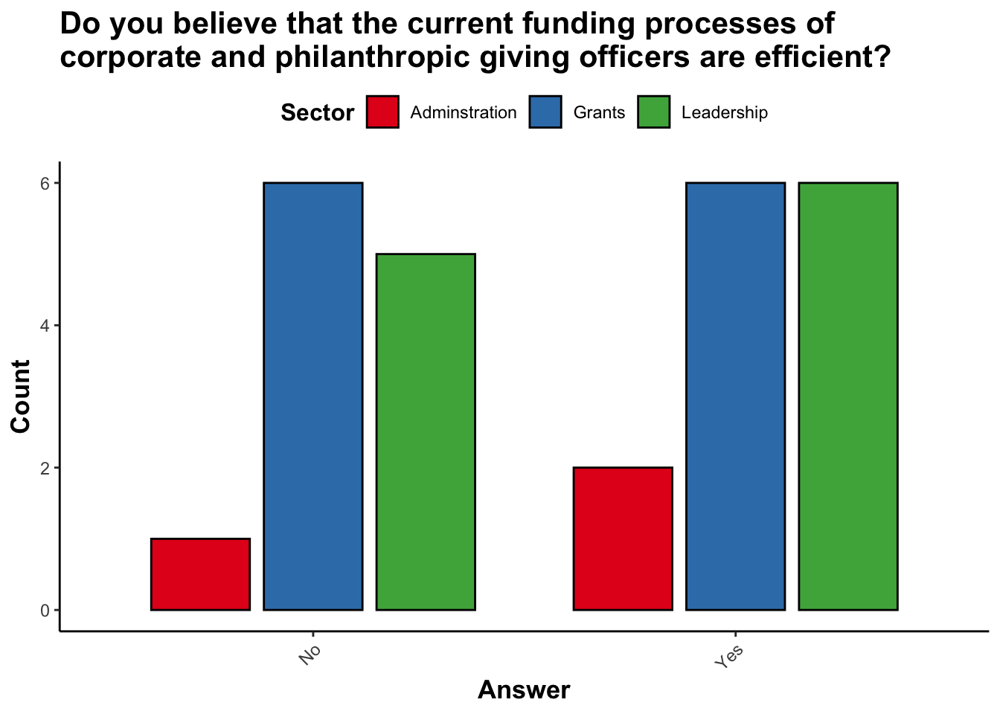
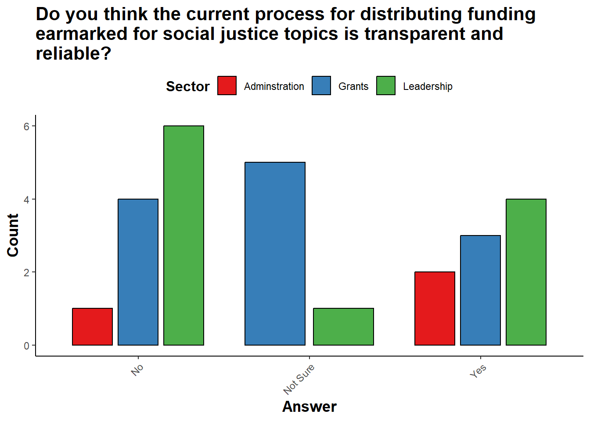
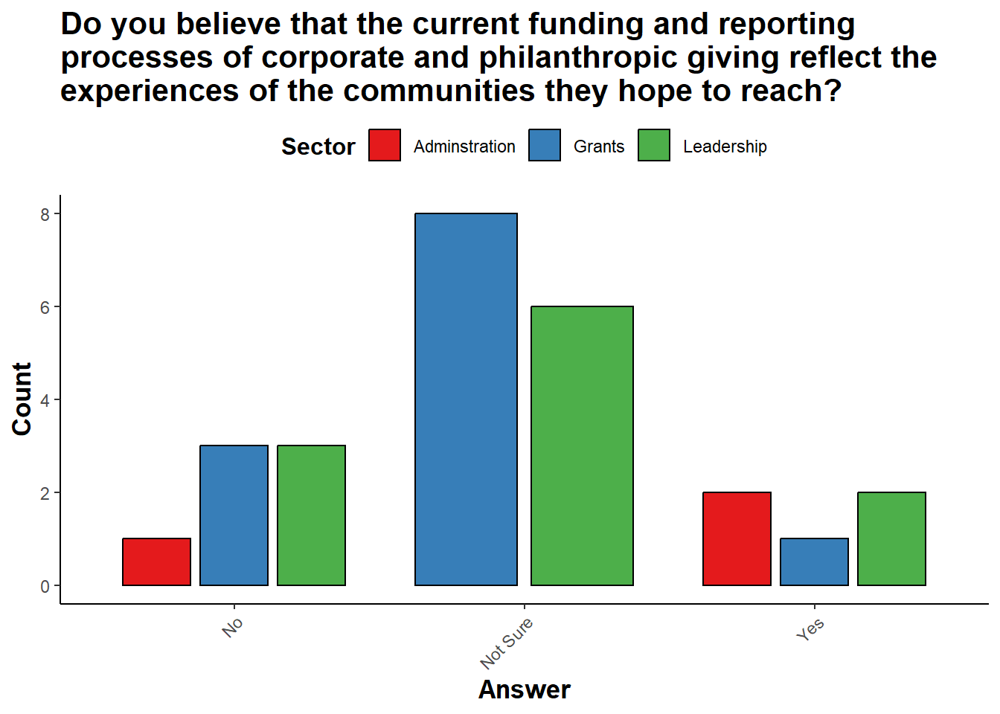
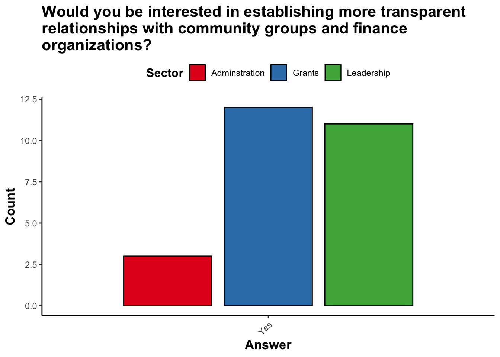

Philanthropic Giving to EJ-Communities (Prototype 1)
Mission Statement & Story
This website aims to provide insights into philanthropic spending related to environmental causes by analyzing SEC and IRS data. The goal is to make philanthropic giving data more accessible and understandable, identify the sources of funding, and reveal where and to whom these funds are being directed. This information will be compiled into a dashboard tool to aid donors, communities, and policymakers in making informed decisions about environmental giving.
Transparency is our number one goal. Although current data is accessible via the SEC and IRS, the breadth and depth of this data makes it extremely difficult for those at large without much data science experience to analyze accountability of how philanthropic giving operates in cities of interest and whether this philanthropic giving is reported. This guts the ideal of a feedback loop between the donors that are giving, and the impacted communities that are supposed to receive assistance.
Thus, our objective is to reestablish this feedback loop between communities and philanthropic giving officers, ensuring that the perspectives and leadership of community members are at the forefront of all funding decisions.
This will start as comparative analysis of Corporations and Nonprofits. This will be done through documents provided by the Securities and Exchange Commission (SEC) and the IRS (through their Business Master File and Form 990s). More information on these will be provided in their respective analyses. As a result, it will lay the foundation for trend analysis, and where we project this giving to be in the future.
Utlimately, this will operate as a multi-faceted tool that combines education, transparency, and decision-making. Through the education of communities at large, we can find accoutnability and decision-making for government agencies involved not only to make sure impacted communities are served, but to hold those accountable for their philanthropic giving. This innovative dashboard will serve as a convenient platform for direct verification of funding impacts, empowering communities to track and assess the resources flowing into their areas.
Goal for this Website
This website in particular is geared towards highlighting the most important features we find within the public datasets provided. To ensure a clear vision for how we’d like the story of philanthropic giving to be told, we’ve highlighted the many ways this story can be told with many different visualization ideas. For the readiness of our UX developers of our dashboard, we’d like to make sure that there is transparency within the public data that we parsed through in hopes that it will create the most effective and easy-to-use and display tool for our MVP.
Website Structure/Guide
Corporate: documents insights from financial and philanthropic metrics from the Securities and Exchange Commission (SEC) financial statements of public companies.
Nonprofit: documents insights from financial and philanthropic metrics from the IRS Exempt Organizations Business Master File and Form 990 filings of tax-exempt organizations.
Comparative Analysis: This page will highlight a comparative analysis of the individual work done on the Corporate and Nonprofit level. It will provide both a holistic view of how philanthropic giving operates at different granularities, and be the starting point for our dashboard.
Motivation
In an attempt to gauge the current thoughts on philanthropic giving, there were qualitative interviews conducted to several foundations and their team members in different sectors. These charts give us a small glimpse at why we’re doing what we’re doing.
In the chart above we can see a split decision from the survey when asked about the efficient of current proccesses of corporate and philanthropic giving officers.

In this next question we asked, the majority of our respondents were asked to clarify if they believed the current process and feedback loop established for distribution funding for social justice topics is transparent and reliable. The responses recommend action should be taken as there isn’t an overwhelming majority of people at these organizations who believe in it’s current transparency.

As there exists no feedback loop, we’re hoping to provide more transparency to those who are involved in philanthropic giving in order to further clarify whether this giving and it’s current funding/reporting reflect the experiences of the communities they hope to reach.

This last question showed a unanimous count of those individuals indicating they’d be interested in establishing more transparent relationships with community groups and finance organizations, granting us confidence in our motivation moving forward with producing and facilitating this data dashboard and feedback loop.